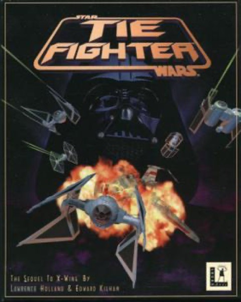

Simulation · 1994
TIE Fighter
Flying for the Empire, with the sharpest mission design of the era.

Cover: Wikipedia: Star Wars: TIE Fighter
Facts
- Released
- 1994-07-01
- Genre
- Space Sim
- Category
- Simulation
- Platforms
- PC
- Developers
- Totally Games
- Publishers
- Lucasfilm Games
PC requirements
- Minimum
- [object Object]